Heatmap Plots
Mon Mar 12 15:07:17 2018
The following demonstrates some uses of the plot_heatmap function in the phyloseq package for R and Bioconductor.
Introduction
An ecologically-organized heatmap
In a 2010 article in BMC Genomics, Rajaram and Oono describe an approach to creating a heatmap using ordination methods (namely, NMDS and PCA) to organize the rows and columns instead of (hierarchical) cluster analysis. In many cases the ordination-based ordering does a much better job than h-clustering at providing an order of elements that is easily interpretable. The authors provided an immediately useful example of their approach as the NeatMap package for R. The NeatMap package can be used directly on the abundance table ("otu_table"-class) of phylogenetic-sequencing data, but the NMDS or PCA ordination options that it supports are not based on ecological distances. To fill this void, and because phyloseq already provides support for a large number of ecological distances and ordination methods, phyloseq now includes the plot_heatmap() function: an ecology-oriented variant of the NeatMap approach to organizing a heatmap and build it using ggplot2 graphics tools. The distance and method arguments are the same as for the plot_ordination function, and support large number of distances and ordination methods, respectively, with a strong leaning toward ecology. This function also provides the options to re-label the OTU and sample axis-ticks with a taxonomic name and/or sample variable, respectively, in the hope that this might hasten your interpretation of the patterns (See the documentation for the sample.label and taxa.label arguments, and the examples below). Note that this function makes no attempt to overlay dendrograms from hierarchical clustering next to the axes, as hierarchical clustering is not used to organize these plots. Also note that each re-ordered axis repeats at the edge, and so apparent clusters at the far right/left or top/bottom of the heat-map may actually be the same. For now, the placement of this edge can be considered arbitrary, so beware of this artifact of the graphic and visually check if there are two “mergeable” clusters at the edges of a particular axis. If you benefit from this phyloseq-specific implementation of the NeatMap approach, please cite the NeatMap article, as well as phyloseq.
Heatmap colors don’t have to be so hot
Traditionally heatmaps have been used to emphasize data that is above or below a threshold as “hot” or “cold” colors, respectively. In the case of OTU-abundance data, however, it seems the most common need is to see the relative patterns of high-abundance OTUs against a background of taxa that are mostly low-abundance or absent in a sparse matrix. Furthermore, there is usually not an obvious or intrinsically meaningful abundance value to use as a suitable threshold for the traditional “cold/hot” display. For these reasons, the default color scheme in plot_heatmap maps a very dark blue color to the lowest abundance values, up to a very light blue for the highest abundance values. This default continuous color palette is a coherent, blue-oriented color scheme in which the eye should be drawn to the lighter shades. The dark blue for the lowest abundance values is not very much lighter than black, and true black is used to represent missing or zero abundance values.
If, for whatever reason, you need to change this default color scheme, it is possible through the low, high, and na.value arguments. Several examples are provided below. The character-string values supplied to these arguments need to be the names of R colors. There are over 600 English color names that are understood by R (try colors() at the R terminal), as well as other finely-resolved color gradient nomenclatures. The examples below use a 6-digit hexadecimal color representation, and a nice [table summary of these colors is available at the R Cookbook](http://wiki.stdout.org/rcookbook/Graphs/Colors%20(ggplot2\)/).
For further details, not that the high, low, and na.value parameters are passed along to ggplot2’s scale_gradient function, which does an excellent job selecting suitable colors of your gradient, provided that you select colors that make sense to have at two ends of a gradient.
I also got some useful ideas and suggestions at the following WordPress page regarding the construction of heatmaps using ggplot2’s geom_tile.
Color scaling
In addition to the color palette that defines the poles, color in the heatmap is also characterized by the numerical transformation from observed value to color – called color scaling.
By default, the plot_heatmap color scale is a log transformation with base 4, using log_trans(4) from the scales package. This is an arbitrary choice that you might need to adjust based on your needs and data. If specifying an alternative transformation object to the trans argument, you probably need to load the scales package first. Since scales is a required package for phyloseq, you should already have it installed if you are at this point. Any transformation object that is valid for the scales package should work here, but the relative contrast and the way it represents your data could change dramatically based on this choice, so make this selection carefully; or better yet, try several different transformations if you think data is being “left in the background” or too much information is being “pushed to the foreground”, for example.
Examples
Load Packages, Data
library("phyloseq"); packageVersion("phyloseq")## [1] '1.22.3'library("ggplot2"); packageVersion("ggplot2")## [1] '2.2.1'ggplot2 package theme set. See the ggplot2 online documentation for further help.
theme_set(theme_bw())Plot a 300-taxa dataset
The following two lines subset the dataset to just the top 300 most abundant Bacteria taxa across all samples (in this case, with no prior preprocessing. Not recommended, but quick).
data("GlobalPatterns")
gpt <- subset_taxa(GlobalPatterns, Kingdom=="Bacteria")
gpt <- prune_taxa(names(sort(taxa_sums(gpt),TRUE)[1:300]), gpt)
plot_heatmap(gpt, sample.label="SampleType")## Warning: Transformation introduced infinite values in discrete y-axis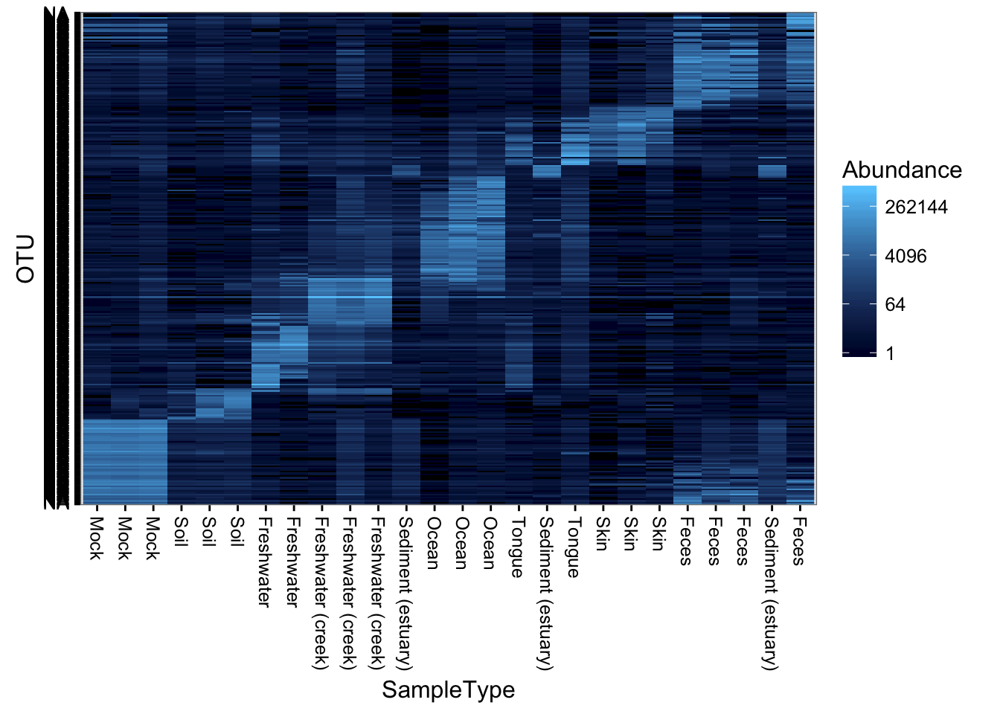
Subset a smaller dataset based on an Archaeal phylum
Subset the dataset to something manageable that can be reasonably represented in one plot. In the following examples, the Crenarchaeota phylum.
gpac <- subset_taxa(GlobalPatterns, Phylum=="Crenarchaeota")Default plot_heatmap settings
Now let’s see how our plot_heatmap function works with all default settings.
plot_heatmap(gpac)## Warning: Transformation introduced infinite values in discrete y-axis
Re-label by a sample variable and taxonomic family
Here is an example re-labelling based on the “SampleType” sample variable and the taxonomic rank of “Family”.
(p <- plot_heatmap(gpac, "NMDS", "bray", "SampleType", "Family"))## Warning: Transformation introduced infinite values in discrete y-axis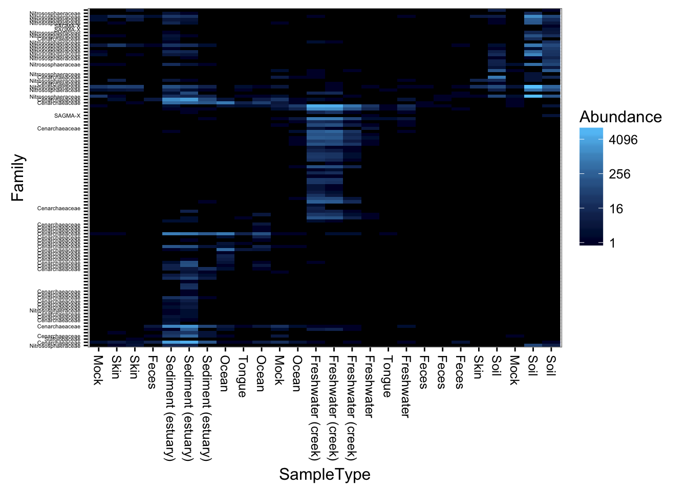
Re-label axis titles
What if you wanted to change the axis labels, but not the labels on individual features?
p$scales$scales[[1]]$name <- "My X-Axis"
p$scales$scales[[2]]$name <- "My Y-Axis"
print(p)## Warning: Transformation introduced infinite values in discrete y-axis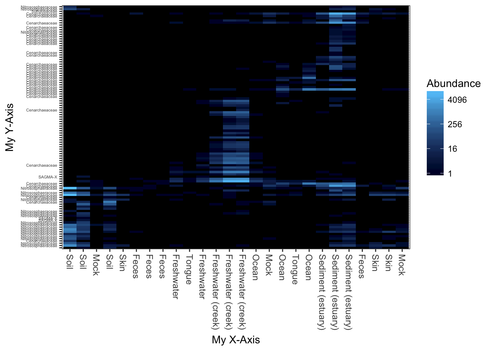
Now repeat the plot, but change the color scheme.
Changing the color scheme might be worthwhile, depending on the graphics device or paper on which you want to display the heatmap.
plot_heatmap(gpac, "NMDS", "bray", "SampleType", "Family", low="#000033", high="#CCFF66")## Warning: Transformation introduced infinite values in discrete y-axis
Here is a dark-blue to red scheme.
plot_heatmap(gpac, "NMDS", "bray", "SampleType", "Family", low="#000033", high="#FF3300")## Warning: Transformation introduced infinite values in discrete y-axis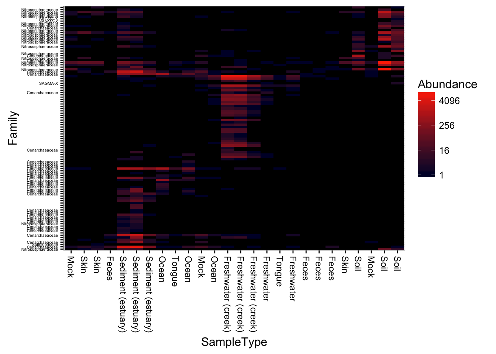
A very dark-blue to very light-blue scheme
plot_heatmap(gpac, "NMDS", "bray", "SampleType", "Family", low="#000033", high="#66CCFF")## Warning: Transformation introduced infinite values in discrete y-axis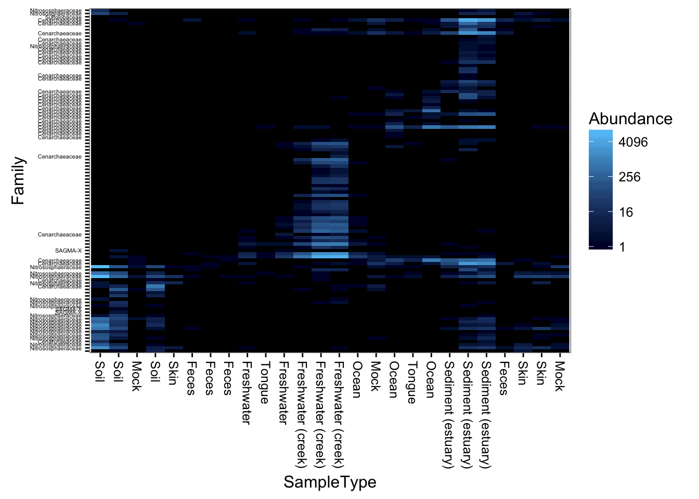
Here is a “dark on light” color scheme. Note that we change the background value (the value of the NA and 0 elements)
plot_heatmap(gpac, "NMDS", "bray", "SampleType", "Family", low="#66CCFF", high="#000033", na.value="white")## Warning: Transformation introduced infinite values in discrete y-axis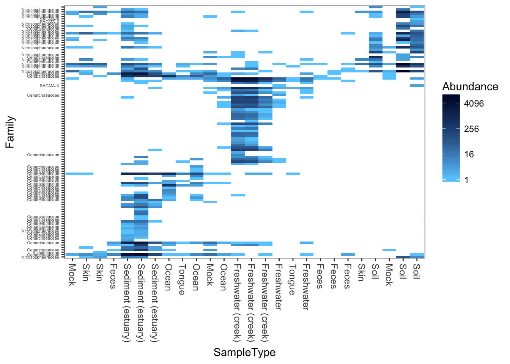
This is a similar color scheme as the previous, but the “near zero” color is closer to a cream color, and the colors themselves are closer to blue-grey. This is better overall contrast than a lot of schemes, but may not be as exciting.
plot_heatmap(gpac, "NMDS", "bray", "SampleType", "Family", low="#FFFFCC", high="#000033", na.value="white")## Warning: Transformation introduced infinite values in discrete y-axis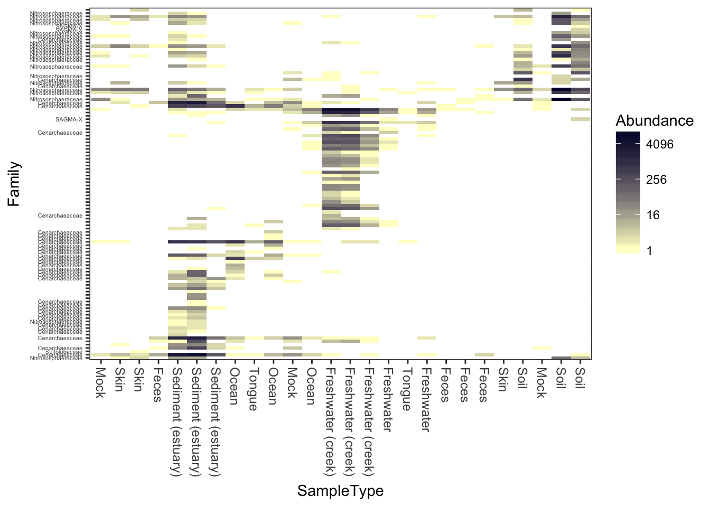
Now try different ordination methods, distances
Now try the default color scheme, but using different ecological distances/ordinations. For example, NMDS ordination on the jaccard distance.
plot_heatmap(gpac, "NMDS", "jaccard")## Warning: Transformation introduced infinite values in discrete y-axis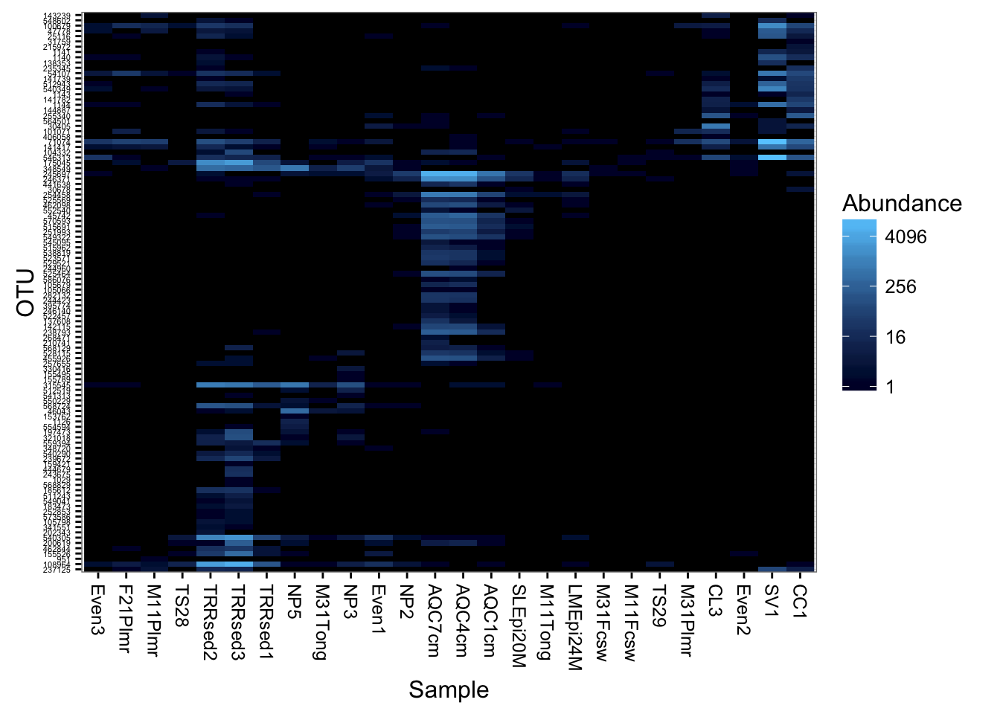
Detrended correspondence analysis.
plot_heatmap(gpac, "DCA", "none", "SampleType", "Family")## Warning: Transformation introduced infinite values in discrete y-axis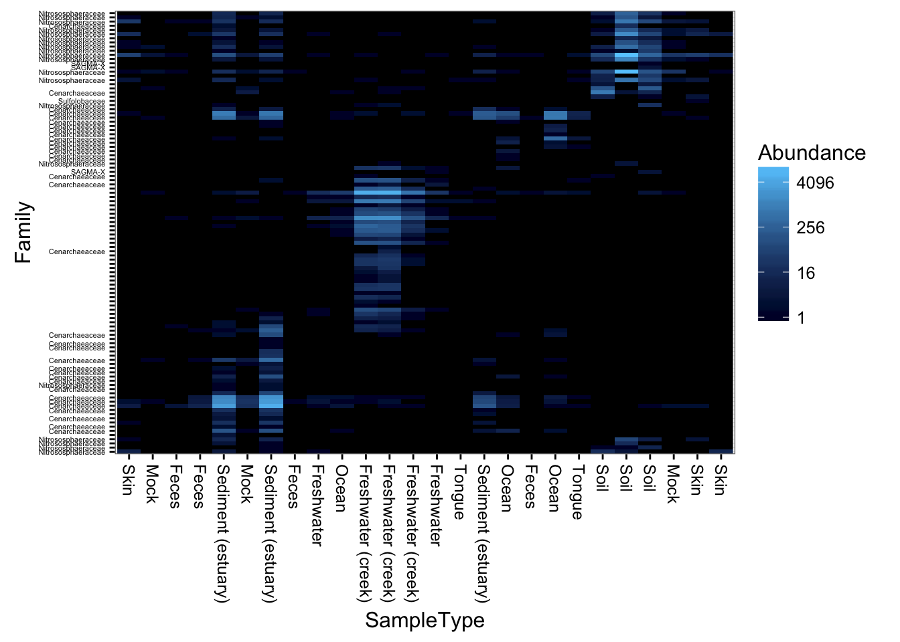
Unconstrained redundancy analysis (Principle Components Analysis, PCA)
plot_heatmap(gpac, "RDA", "none", "SampleType", "Family")## Warning: Transformation introduced infinite values in discrete y-axis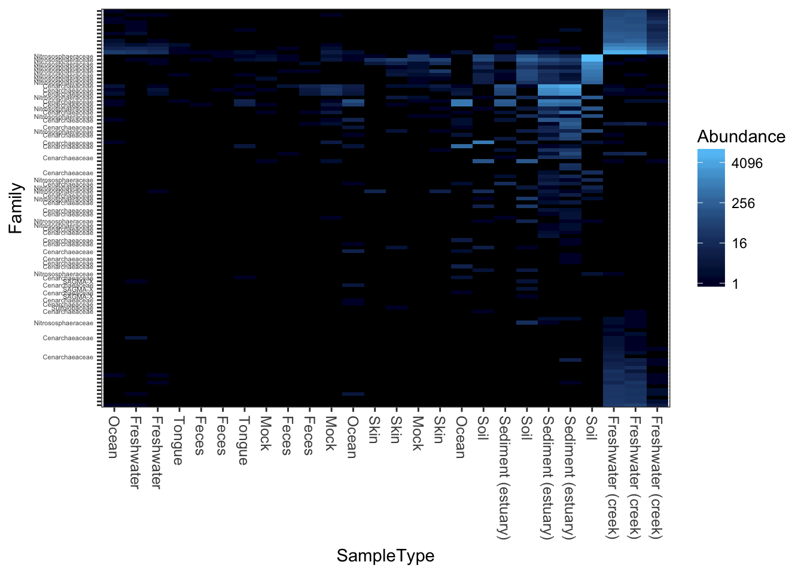
PCoA/MDS ordination on the (default) bray-curtis distance.
plot_heatmap(gpac, "PCoA", "bray", "SampleType", "Family")## Warning: Transformation introduced infinite values in discrete y-axis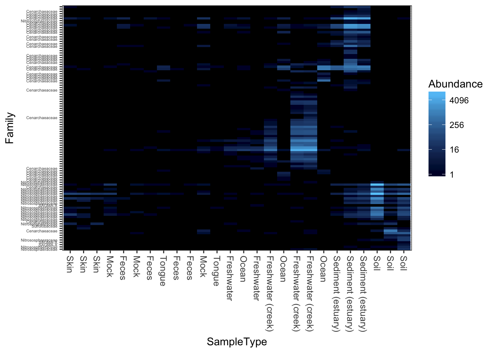
MDS/PCoA ordination on the Unweighted-UniFrac distance.
plot_heatmap(gpac, "PCoA", "unifrac", "SampleType", "Family")## Warning: Transformation introduced infinite values in discrete y-axis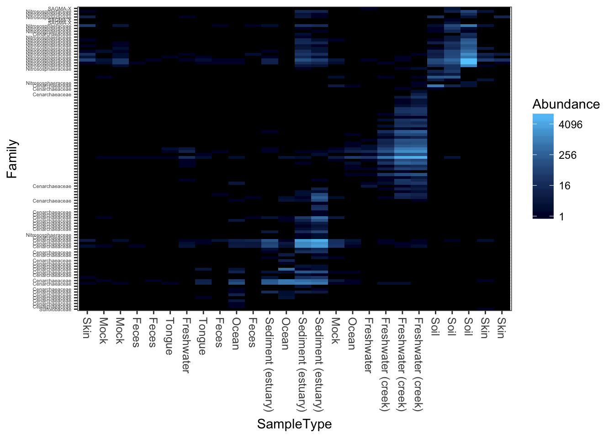
Now try weighted-UniFrac distance and MDS/PCoA ordination.
plot_heatmap(gpac, "MDS", "unifrac", "SampleType", "Family", weighted=TRUE)## Warning: Transformation introduced infinite values in discrete y-axis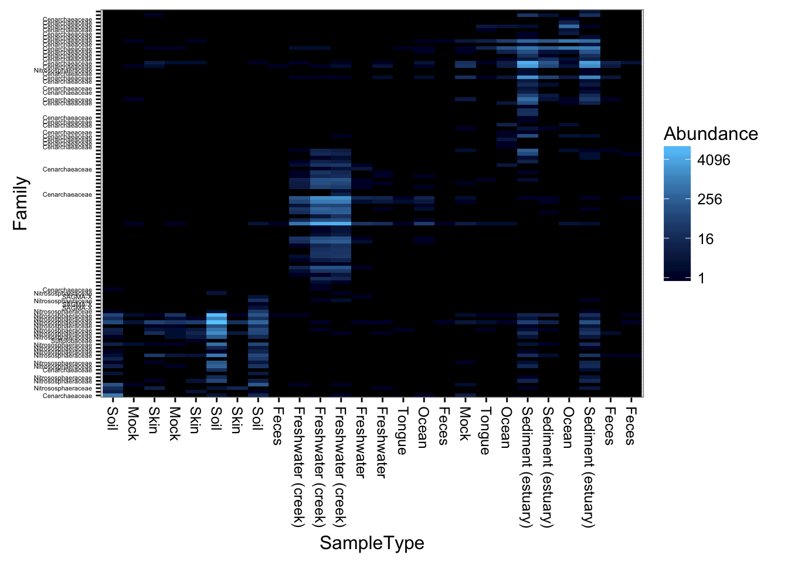
Here is how you might create a heatmap using base-R graphics and the more common (but problematic) hierarchical clustering organization, in case you want to compare with plot_heatmap, for example.
heatmap(otu_table(gpac))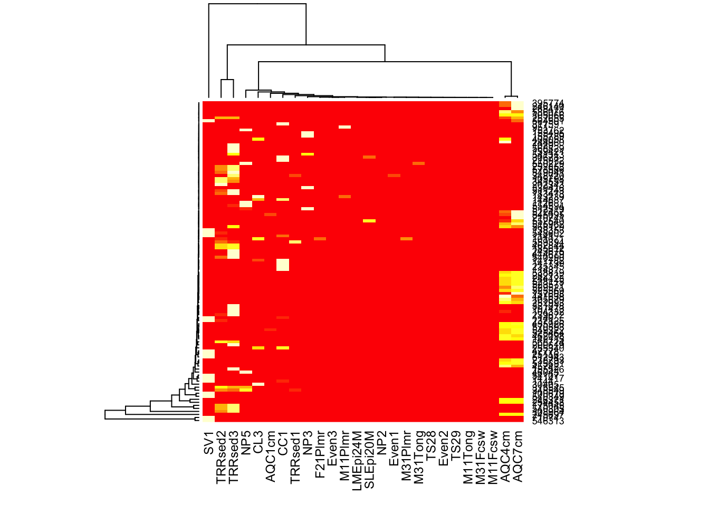